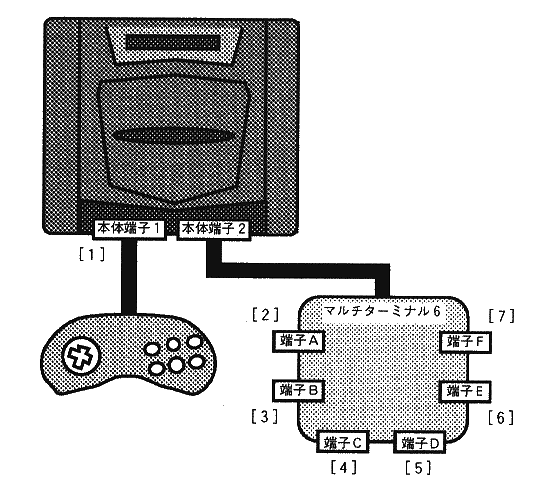
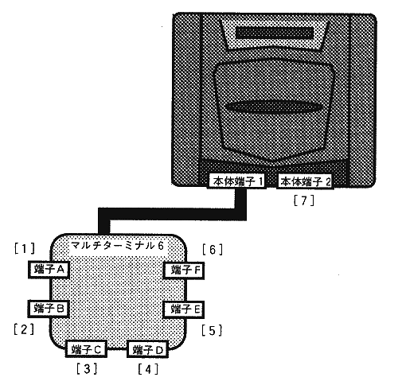
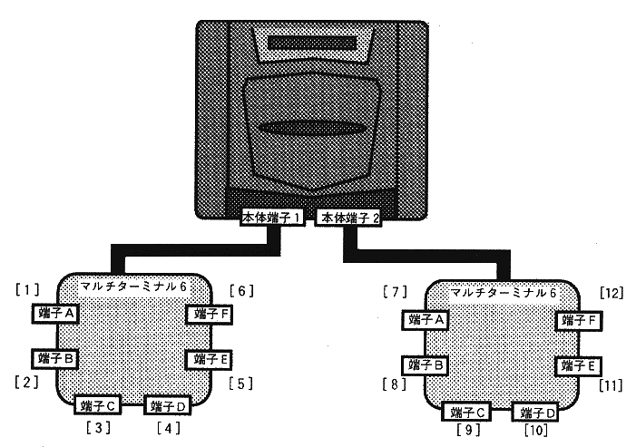
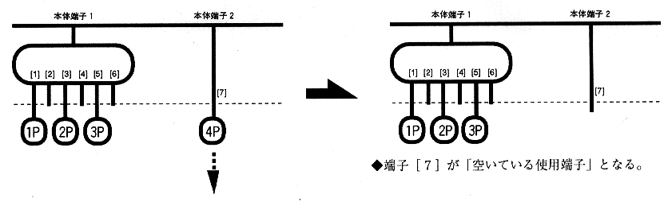
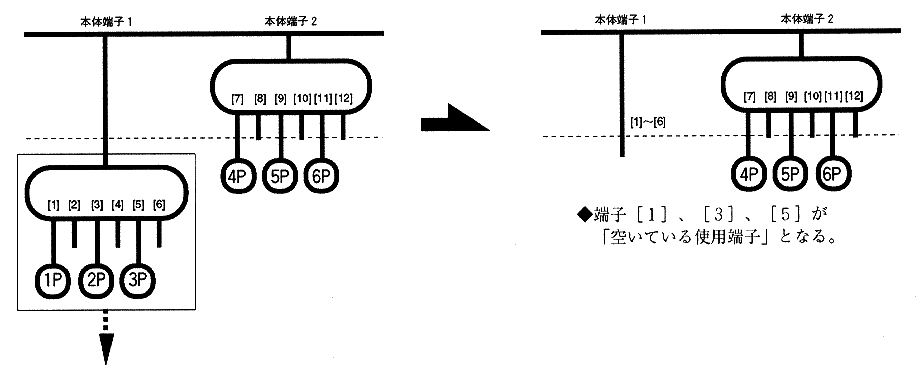
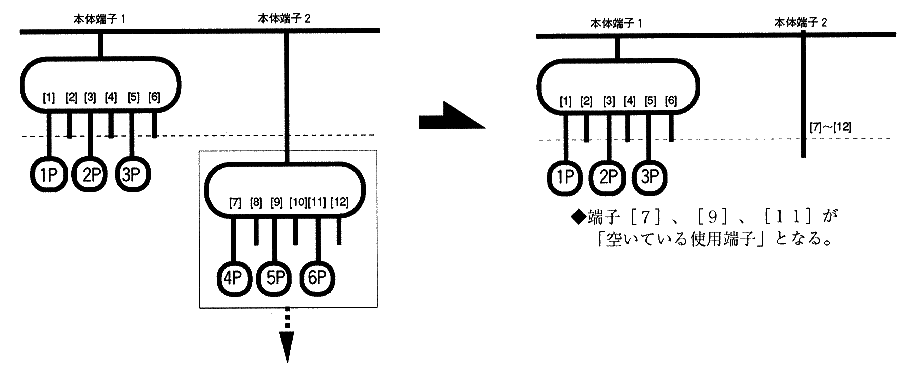
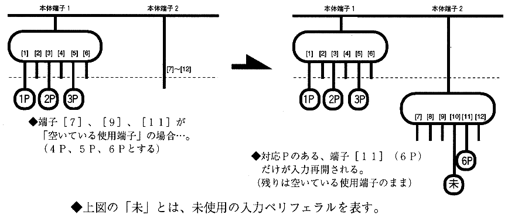
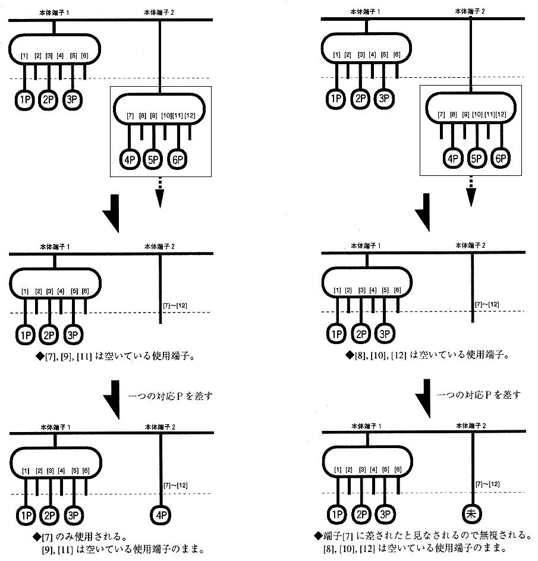
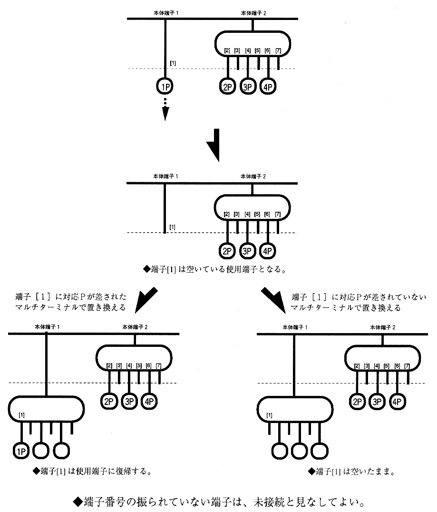

セガサターン用のすべてのソフトウェアは、対応プレイ人数に関係なく、マルチターミナルで問題なく動作しなくてはならない。
※マルチターミナルの端子にマルチターミナルを接続することは、ハード的に未接続とみなされるため対応しなくてよい。
マルチターミナル接続時には端子数およびプレイ可能人数が増えるので、〈対応入力ペリフェラル設定原則〉を拡張した、以下の原則を守らなければならない。
＜マルチターミナル設定原則＞ ・本体端子１に対応Pまたはマルチターミナルが接続されていない場合、ゲームをスタートさせてはならない。 ・本体端子１にマルチターミナルが接続されている際に、そのマルチターミナルのどの端子にも対応Pが接続されていない場合は、ゲームをスタートさせてはならない。 ・複数人数プレイの場合、本体端子1／本体端子２のどちらにマルチターミナルが接続されていても正常に動作しなければならない。（次頁接続例参照） ・操作番号の割り当ては、マルチターミナルの接続状態により常に若い番号の端子（左側の端子）を優先し、操作番号の逆転を起こしてはならない。 |
※操作番号の逆転とは、本来、操作番号は端子番号の若いものから昇順にアサインされるべきである が、そうはなっていないことを言う。
※操作番号の逆転さえ起こしていなければよいので、使用端子は必ずしも連続している必要はない。 （使用端子間に空きがあってもよいということ）

※この接続例（２）は、あえて奨励しない。原則的には接続例（１）。


マルチターミナル使用時の入力ペリフェラルのチェックを記す。内容の記載がない箇所については、原則として「１．基本項目」に準拠する。
《推奨仕様》
| (a)スタート前のチェック |
◆対応Ｐのチェック（有効端子の登録）
| (b)スタート時のチェック |
◆アプリケーションのスタート
※途中参加の可能な多人数ゲームでは、１Ｐ以外からスタートさせてもよい場合もあり得る。
◆使用端子の決定
（i）有効端子の中から端子番号の若い順に左詰めで使用端子を選ぶ。
（ii）有効端子の中から端子番号の若い順に使用端子を選ぶ（操作番号を割り当てる）が、タイトル画面等の特定の場所でスタートボタンが押されたもののみを使用端子とする。
※規則（ii）の場合、未使用端子に操作番号が割り当てられる場合もある。
※規則（ii）を適用する際には、操作番号の混乱を招かないような仕様にしなければならない。（スタートボタンを押した瞬間にどのプレイヤーが参加したかを画面に表示し、入力のリアクションを画面上に表示する、等）
| (c)メインゲーム内のチェック |
◆抜き差しのチェック
(i) 抜かれた場合



(ii) 差された場合
※いずれも、ポーズ状態の場合は解除を待つ。
※抜かれた使用Ｐ以外が差し戻された場合でも、それが対応Ｐならば入力を再開する。

(iii) 置き換えられた場合
［少ない端子で置き換えられた場合］（マルチターミナル→一つのペリフェラル）
→置き換えられる前の端子の内、一番若い端子に差したと見なす
（図 別冊２-９、 別冊２-10参照）
［多い端子で置き換えられた場合］（一つのペリフェラル→マルチターミナル） →置き換えられた端子の内、一番若い端子のみ有効とする（図 別冊２-10参照）


(iii)追加された場合
マルチターミナルを使用しかつ［途中参加］があるアプリケーションでは、追加で差された場合に操作番号の逆転を起こしてしまう可能性がある。
※マルチターミナル設定原則では使用端子間に空きがあることを認めており、また［途中参加］のある場合のメインゲーム中の追加差しも認めている。よって空いている端子に追加で差された場合、操作番号の逆転を起こしてしまう可能性がある。
この場合は次の規則によって操作番号の逆転を防ぐものとする。
※ほとんどのマルチターミナル使用ユーザは、取扱説明書に明記してあるように左詰めの接続状態でこれを使用しているという考えが前提となっての対処である。
（２．マルチターミナル６、了）